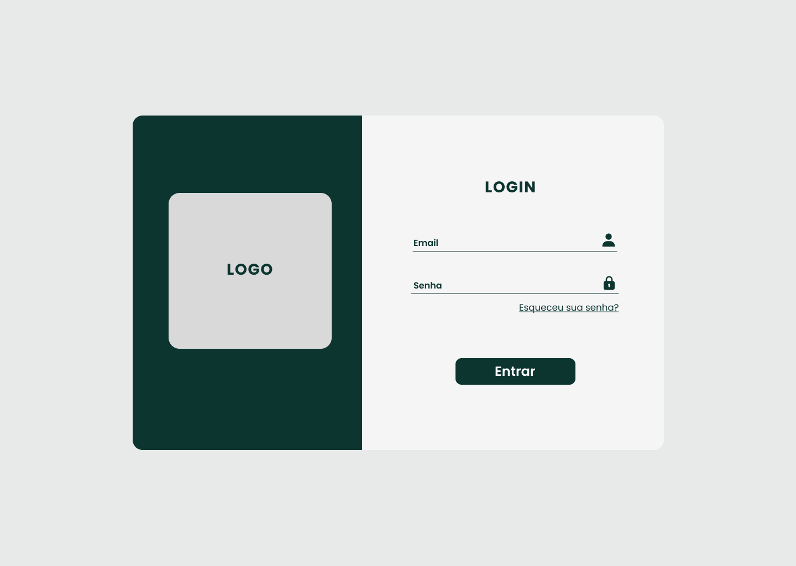
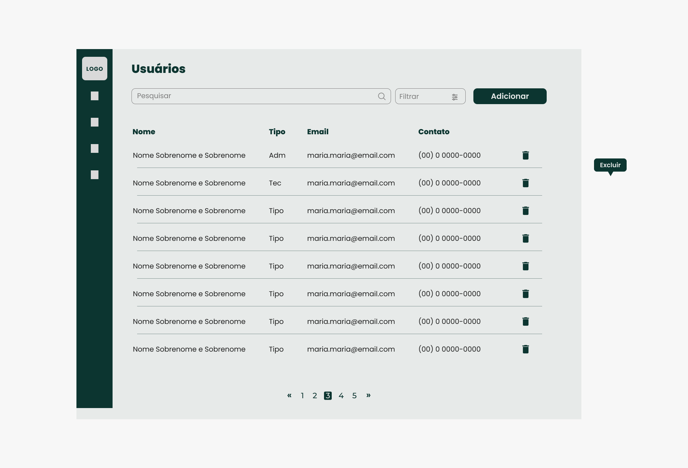
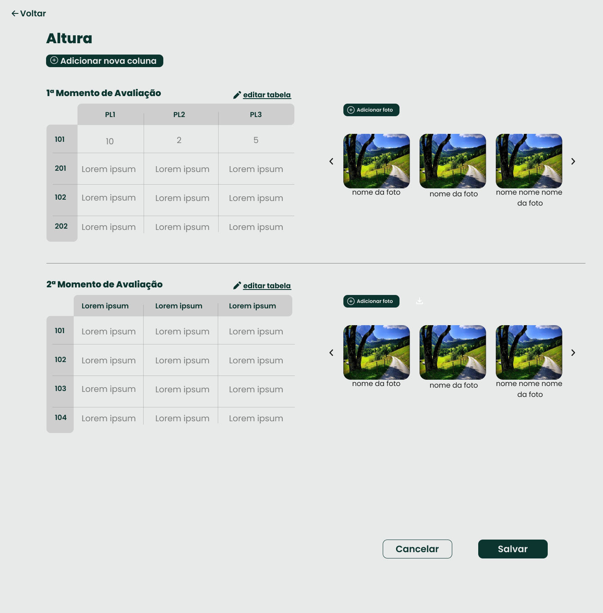
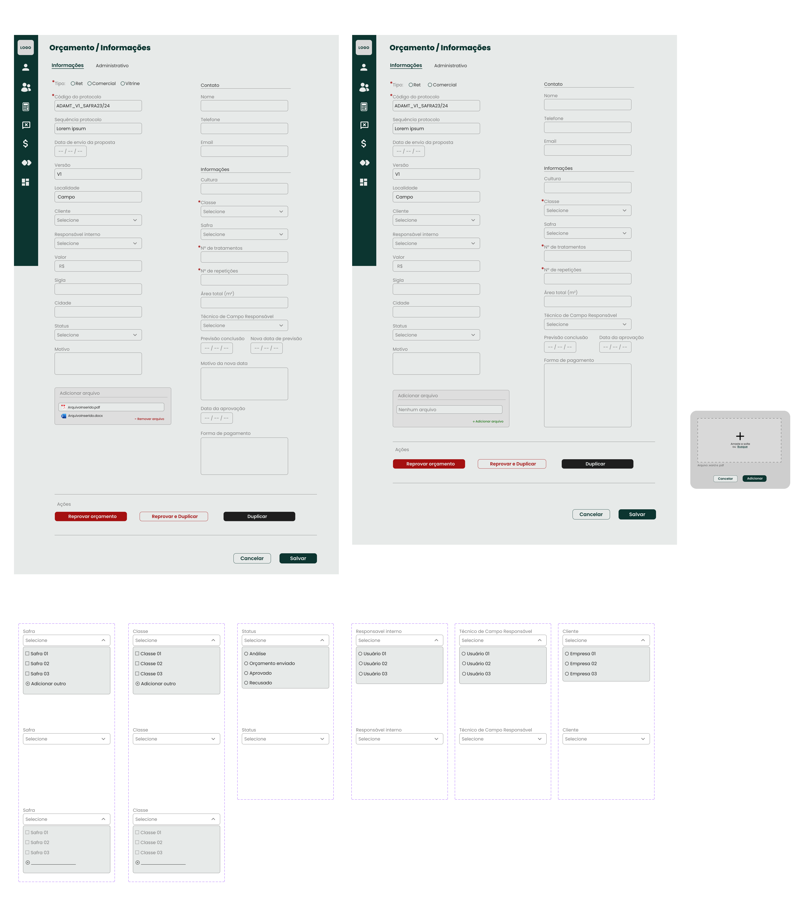
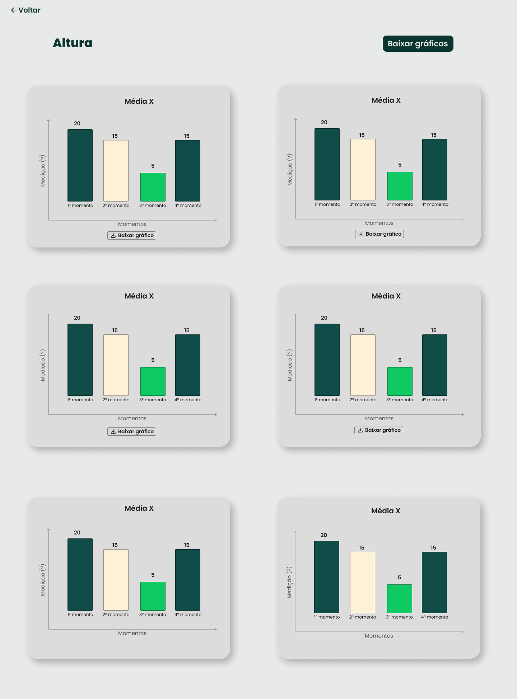
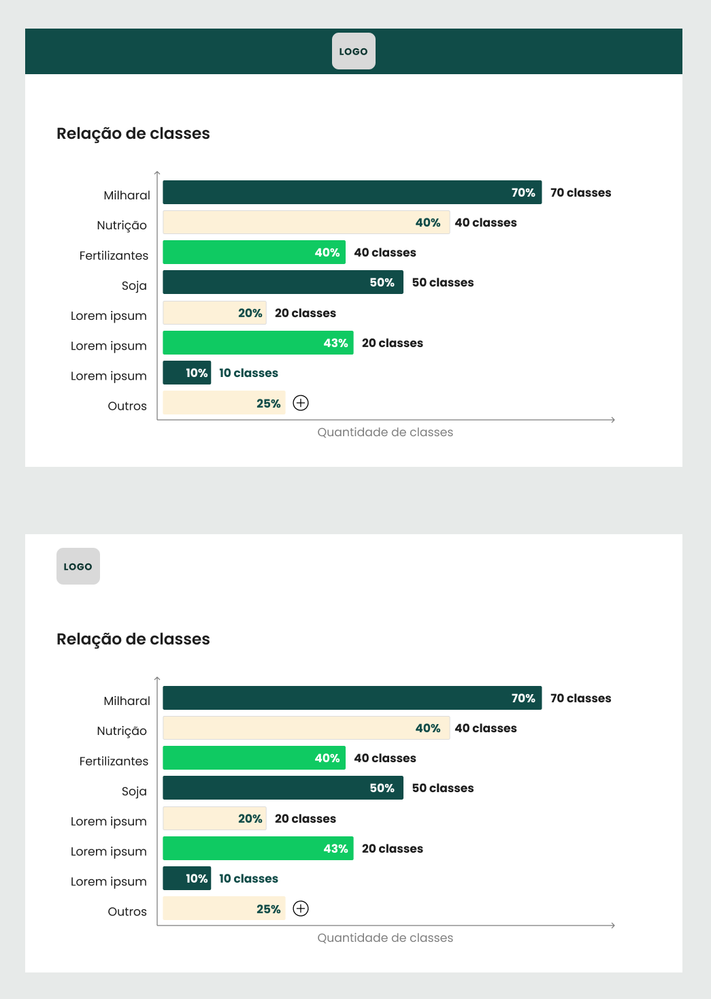
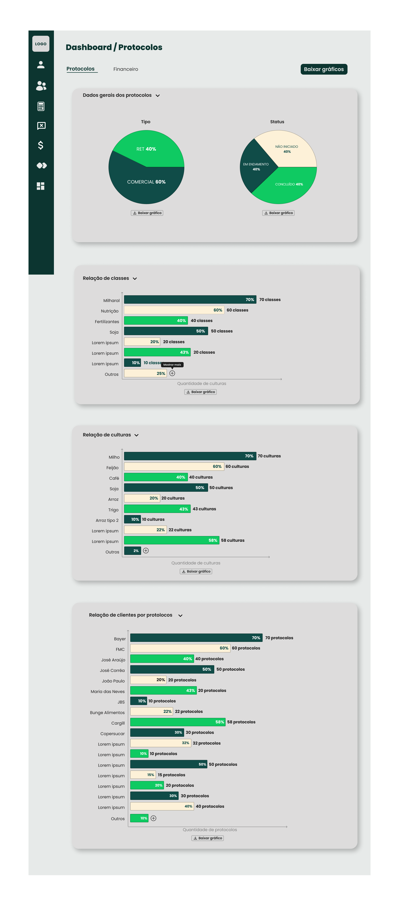
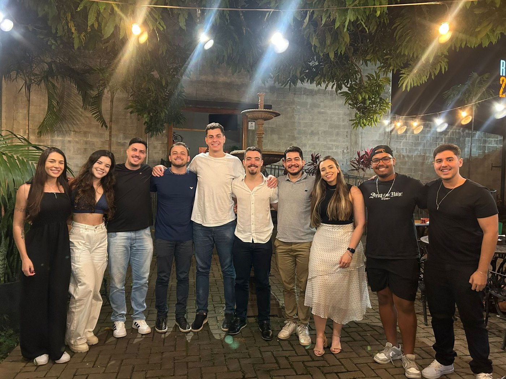

Desenvolvimento de Aplicações Web na Empresa Zeeway
Construção do front-end de uma plataforma de protocolos para uma empresa de pesquisa agrícola, substituindo planilhas por registro centralizado e análise visual automatizada.
Roteiro da apresentação
Introdução
O problema, a empresa e o recorte do trabalho.
Fundamentação Teórica
Dados no agronegócio, Scrum e a stack.
Metodologia
Como o time trabalhou e como arquitetei o front-end.
Atividades Realizadas
O foco desta apresentação: os três módulos que construí.
Considerações Finais
Avaliação, limitações e impacto na formação.
Introdução
Onde o estágio aconteceu, qual problema a plataforma resolve e o que exatamente foi minha responsabilidade.
A pesquisa agrícola gera muito dado.
E esse dado vivia em planilhas soltas.
Composição do solo, tratamentos, condições de safra e produtividade, ao longo de anos. Registrar isso em arquivos avulsos cobra um preço.
Rastreabilidade frágil
Sem registro único, ninguém sabe quem alterou o quê.
Regras não aplicadas
A planilha aceita qualquer valor.
Análise manual e lenta
Todo gráfico do relatório era montado à mão.
Zeeway
Empresa lavrense de tecnologia, fundada no ecossistema de inovação da UFLA.
Empresa de pesquisa agrícola de Lavras (MG)
Especializada em análises de solos e sementes.
Uma plataforma própria de protocolos
Registro centralizado, com acesso por perfil.
O que é um protocolo
O registro completo de um experimento agrícola.
Código, tipo e cliente
Tipo, classes e status.
Tratamentos e repetições
Quantos tratamentos comparar e quantas repetições de cada.
Local, solo e manejo
Cultura, datas, adubação, espaçamento e parcela.
Avaliações por momento
Medições ao longo da safra, com fotos e fórmulas.
O que este trabalho se propôs a fazer
Aplicar a graduação em ambiente corporativo real
A rotina de desenvolvimento em equipe, fora da sala de aula.
- Equipe estruturada
- Cliente externo e regras não escritas
- Entregas validadas a cada Sprint
Documentar de forma estruturada o que foi construído
Registrar as decisões de projeto e a justificativa de cada uma.
- Arquitetura e tecnologias
- Metodologia e coordenação entre equipes
- Desafios técnicos e impacto na formação
Minha responsabilidade foi o front-end
O back-end ficou a cargo de outra equipe da Zeeway.
Camada de interface e experiência do usuário
Telas, formulários, tabelas, estado, consumo da API e geração de gráficos.
API REST, banco de dados e regras no servidor
Persistência, regras no servidor e emissão dos tokens.
Fundamentação Teórica
Os conceitos e as tecnologias que sustentaram as decisões tomadas no projeto.
Agricultura 4.0: o dado como insumo de decisão
Sensores, IoT, nuvem e análise de dados passam a orientar a decisão no campo.
Planilha eletrônica
- Um arquivo por pessoa
- Validação depende das pessoas
- Gráfico manual a cada relatório
Plataforma web própria
- Registro único, por perfil
- Regras aplicadas pelo sistema
- Gráficos gerados do próprio dado
Scrum: iterativo e incremental
A cada Sprint, de duração fixa, uma nova versão é entregue.
Product Owner
Prioriza o backlog e define o escopo da Sprint.
Scrum Master
Garante o processo e remove impedimentos.
Time de desenvolvimento
Executa e entrega o incremento.
Planning
Escopo da Sprint
Daily
Progresso e impedimentos
Sprint
Duração fixa
Review
Incremento ao cliente
Retrospective
Melhoria do processo
A stack, organizada por responsabilidade
Toda tela do sistema faz quatro coisas: desenha o que aparece, lembra o que já aconteceu, busca os dados no servidor e precisa ser montada. Cada coluna resolve uma delas.
React + TypeScript
Componentização e tipagem. Material UI, TanStack Table e ApexCharts.
Zustand + Immer
Estado global e sessão persistida. Formik e Yup nos formulários.
Axios + React Query
Token em toda chamada. Cache que evita requisição repetida.
Vite
Build e servidor de desenvolvimento com recarga instantânea.
Metodologia e Processo
Como o time trabalhou, como os requisitos foram levantados e como o front-end foi arquitetado.
Sprints de duas semanas
- Planning: o backlog priorizado vira Sprint Backlog
- Itens acompanhados no Azure DevOps Boards
- Dailies: progresso e impedimentos
- Review com o cliente, retrospective com o time
Entregas incrementais e validação contínua, com menos retrabalho.
As regras estavam na prática, não no papel
Boa parte das regras era específica do domínio e vivia na rotina da equipe, não em documento.
- Nada disso estava registrado
- Cada variação era esclarecida com o cliente
- A regra acordada virava esquema de validação
Três camadas, três responsabilidades
Cada camada tem um motivo único para mudar.
A estrutura de diretórios reflete as camadas
src/ components/ tabelas, modais, graficos config/ constantes globais contexts/ contextos de React hooks/ useForm, useRoles, React Query layouts/ autenticacao e listagem pages/ Login, Protocols, Dashboard... routes/ definicao e guarda de rotas services/ chamadas a API (Axios) store/ estado global (Zustand) theme/ tema do Material UI types/ tipos compartilhados utils/ axios, arquivos, debounce
- components, pages, layouts: o visual
- store, services, routes: estado, API e rotas
- hooks centraliza os hooks customizados, como useForm e useRoles
- utils: funções auxiliares
Como front e back andaram em paralelo
Paralelizar o trabalho a partir de uma interface comum, acordada antes do código.
Contrato acordado
Endpoint, método e formato dos dados
Trabalho simultâneo
Back faz o endpoint. Front constrói a tela com mock
Integração
Troca o mock pela API real
Ajuste
Ajustes na daily ou na planning
Nenhuma das equipes ficava permanentemente em ritmo diferente da outra.
Atividades Realizadas
A plataforma de protocolos, módulo a módulo: o que foi construído, as decisões técnicas por trás e os desafios enfrentados em cada etapa.
Três módulos, selecionados por relevância e complexidade técnica
Autenticação e Controle de Acesso
Sessão com JWT, renovação transparente e acesso por perfil.
Registros Agrícolas
O núcleo. Listagem, cadastro e edição dos protocolos.
Análise e Dashboards
O diferencial. Gráficos automáticos e exportação com a marca do cliente.
O ponto de entrada de todos os usuários
- Identidade visual do cliente
- E-mail, senha e recuperação
- A API devolve um par de tokens JWT
- Sessão persistida entre acessos

Do token à sessão: Zustand, Immer e jwt-decode
- persist salva a sessão no armazenamento local
- produce, do Immer, deixa escrever como se alterasse direto
- O token é decodificado e as claims viram userData
- O perfil daqui governa todo o controle de acesso
export const loginStorePersist = create( persist((set, get) => ({ // ...estado inicial omitido setLoginInfo: ({ data }) => set(produce((draft) => { draft.isAuthenticated = true; draft.session = { accessToken: data.data.accessToken, refreshToken: data.data.refreshToken, }; const decoded = jwtDecode(data.data.accessToken); draft.userData = { name: decoded.unique_name, id: decoded.nameid, email: decoded.email, roleId: decoded.role, }; })), }), { name: "UserData" }) );
Renovação de sessão transparente para o usuário
- O token é anexado uma vez, para todas as chamadas
- O interceptador só age no 401
- Renova o token e reenvia a requisição
- Sem logout no meio de um formulário longo
axiosInstance.interceptors.response.use( (response) => response, async (error) => { const originalRequest = error.config; const status = error.response?.status; if (status === 401 && !originalRequest._retry) { const { refreshToken } = loginStorePersist.getState().session; originalRequest._retry = true; const response = await axiosInstance.post( "/user/refreshToken", { refreshToken } ); const newToken = response.data.data.accessToken; loginStorePersist.getState() .setLoginInfo({ data: response.data }); originalRequest.headers["Authorization"] = `Bearer ${newToken}`; return axiosInstance(originalRequest); } return Promise.reject(error); } );
Controle de acesso por perfil, no nível da rota
Administrador
Acesso completo.
Técnico
Registro e consulta de protocolos.
- Um guardião decide antes de renderizar
- Sem permissão, redireciona
const ProtectedRouteGuard = ({ children, adminRoute }) => { const { isAuthenticated, userData: { roleId } } = loginStorePersist((state) => state); const { isUserRole } = useRoles(); if (!isAuthenticated) { return <Navigate to="/login" replace />; } if (adminRoute && !isUserRole("administrador", roleId)) { return <Navigate to="/" replace />; } return children; };

Gestão de usuários
- Visualizar, adicionar, editar e excluir
- Busca textual e filtro por perfil
- Modais, para não perder o contexto
- Formik no estado, Yup na validação
Listagem de protocolos com TanStack React Table
Ordenação e paginação
Sobre um volume crescente de protocolos.
Filtragem
Código, tipo, cliente, classe, cultura, status.
QR Code
Escaneado em campo, abre o protocolo.
Exportação
Saída para planilha.
O maior desafio técnico do projeto
Dezenas de campos em um único protocolo, organizados em oito abas.
O mínimo para um protocolo existir
Tipo, código, cliente, classes, status, tratamentos e repetições.
Preenchidos conforme a pesquisa avança
Cultura, variedade, datas, adubação, espaçamento e delineamento.

Uma estrutura que muda de forma
- As colunas variam conforme o número de repetições
- Linhas adicionadas conforme a necessidade
- Campos-fórmula calculados em execução com mathjs
- Fotografias de campo por momento de avaliação
Todas as fotos de uma avaliação em um único arquivo
- Baixar dezenas de fotos uma a uma inviabilizava o trabalho
- As imagens são buscadas na API e viram blobs
- Baixadas em paralelo com Promise.all
- O JSZip agrupa e entrega um .zip
const handleDownloadImages = async (evaluation) => { getImages(evaluation.id, { onSuccess: async ({ data }) => { const images = data.data; const blobs = await Promise.all( images.map((img) => fetch(img.url).then((res) => res.blob()) ) ); const zip = new JSZip(); blobs.forEach((blob, i) => zip.file(`${images[i].title}.jpg`, blob) ); const zipFile = await zip.generateAsync({ type: "blob", }); saveFile(zipFile, evaluation.name); }, }); };
Traduzir a regra do agrônomo em esquema de validação
- Traduzir a regra do cliente foi o mais difícil
- required com nullable: nulo enquanto preenche, exigido no envio
- array().min(1) garante ao menos uma classe selecionada
- A mensagem da regra é o que o usuário lê
const validationSchema = Yup.object().shape({ isRET: Yup.bool().required("O campo e obrigatorio"), code: Yup.string().required("O campo e obrigatorio"), culture: Yup.string(), experimentalDesign: Yup.string().nullable(), numberOfTreatments: Yup.number() .required("O campo e obrigatorio").nullable(), numberOfRepeats: Yup.number() .required("O campo e obrigatorio").nullable(), plantingDate: Yup.string().nullable(), harvestDate: Yup.string().nullable(), classes: Yup.array().min(1, "O campo e obrigatorio"), clientId: Yup.string().required("O campo e obrigatorio"), });

O padrão se pagou em outros módulos
- O mesmo padrão foi reaproveitado em orçamentos
- Selects, campos de data e modais reutilizados
- useForm padronizou valores e validação em todas as telas
- Um protocolo tem dezenas de tratamentos, cada um com repetições
Aqui está o que a planilha não fazia: transformar dado bruto em gráfico, sem ninguém montar nada.
Do dado de avaliação à imagem exportada
Dados do back-end
Já consolidados pelo servidor
Mapeamento para séries
Rótulos e valores
Opções do ApexCharts
Tipo, cores e rótulos
Renderização
Um gráfico por card
Exportação PNG
Com a identidade visual
const series = [{ name: xAxisTitle, data: yAxis }]; const options: ApexOptions = { chart: { type: "bar", toolbar: { show: false } }, plotOptions: { bar: { distributed: true } }, dataLabels: { enabled: true }, xaxis: { categories: xAxis }, yaxis: { max: maxValue + 1 }, };

Nenhum ajuste manual
- O componente monta sozinho séries e opções
- Barras comparam tratamentos e momentos de avaliação
- Um card por gráfico, com download individual
- Valores sobre as colunas, para comparar de imediato
Pronto para o relatório do cliente
- Um elemento oculto reúne gráfico, logotipo e título
- use-react-screenshot devolve a imagem em base64
- Um link criado na hora força o download
const [_, takeScreenshot] = useScreenshot(); const downloadChart = async (format) => { const imageBase64 = await takeScreenshot(imageRef.current); const link = document.createElement("a"); link.href = imageBase64; link.download = `${imageTitle} - ${chartTitle}.${format}`; link.click(); };


A visão de todos os protocolos
- Protocolos por classe, cultura, cliente e status
- Dados consolidados pelo back-end, buscados com React Query
- O cache mantém tudo atualizado sem recarregar
- Mesmos vetores de rótulos e valores dos gráficos individuais
Muitos gráficos na mesma tela custam caro
Lentidão perceptível
Renderizar vários gráficos ao mesmo tempo travava a interface.
Tudo renderizado de uma vez
Gráficos fora da tela eram montados junto com os visíveis.
Carregamento sob demanda
Com lazy loading, o gráfico só é montado quando aparece.
Considerações Finais
Avaliação do que foi entregue, limitações honestas, trabalhos futuros e o que o estágio deixou na formação.
O objetivo central foi atendido no plano técnico
Sair da planilha para uma plataforma própria, com acesso controlado e análise automatizada.
Centralização
Cadastro completo dos protocolos, com validação declarativa.
Controle de acesso
Cada colaborador vê apenas o que é do seu papel.
Análise automatizada
Gráficos gerados do próprio dado, exportáveis com a marca do cliente.
Dificuldades, limitação e trabalhos futuros
Regras de negócio e performance
- Traduzir o domínio agronômico para a lógica dos formulários
- Desempenho na renderização de múltiplos gráficos
Adoção inicial reduzida
- A adoção inicial foi baixa
- Atribuível à mudança de cultura, não a falha técnica
O que viria em seguida
- Acompanhar a adoção no tempo
- Testes de usabilidade com os colaboradores
- Novos tipos de análise nos dashboards
A primeira experiência com software de verdade
Produto real, equipe estruturada e cliente externo.
Competências consolidadas
React e TypeScript, estado global, formulários, integração com API e, sobretudo, visualização de dados.
Comunicação e trabalho em equipe
Traduzir necessidade de negócio em solução técnica exigiu diálogo constante.
Interfaces orientadas a dados
Visualização de dados passou a orientar meu interesse profissional.
O que a graduação deu, e o que faltou
- Engenharia de Software: requisitos e métodos ágeis
- POO: modularidade virou componentização
- Banco de Dados: as estruturas da API
- IHC: usabilidade e organização das telas
- AED: vetores e estruturas aninhadas
- Frameworks modernos de front-end, vistos de forma superficial
- Testes automatizados de interface, pouco trabalhados no curso
- Integração contínua e versionamento em equipe, com pull requests
- No mesmo grupo, conteinerização e infraestrutura
Cobrir isso teria reduzido a curva dos primeiros dias.
Perguntas?
